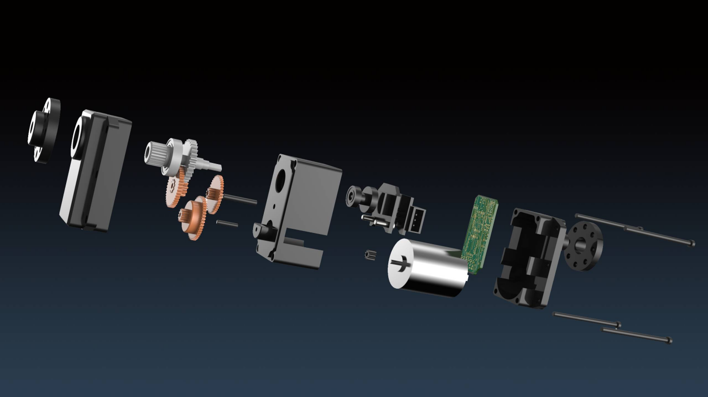

文章目录
6. 下位机XGO Driver介绍
XGO-Mini K210架构图
XGO-Mini K210版本核心架构上位机是K210人工智能模组，机器狗AI相关任务都由上位机完成。下位机使用MCU开发，负责机器狗的电源管理，舵机驱动和核心步态算法等，封装了完整的串口通信协议方便上位机调用。
结构介绍
XGO-Mini K210的主体结构是由1.5mm厚的铝合金结构件和全金属磁编码舵机组成，腿部由硅胶小腿和尼龙脚垫组成，头部的AI模组和驱动板由4pin信号线连接，内置2节18650锂电池，具体结构如下图所示,这里提供 XGO-Mini K210 3D模型下载，提取码:2mdt。
- AI模组
- AI模组支架
- 机器狗前盖
- 机器狗后盖
- 自锁开关
- 18650 2S电池
- 核心驱动板
- 机器狗底盖
- 充电孔
- 金属高速磁编码总线舵机
- ③机器狗前盖、④机器狗后盖和⑧机器狗底盖作为机器狗机架，用于联接各部件。前后腿分别通过四颗螺钉固定在机器狗底盖前后侧；核心驱动板通过四颗塑料螺钉固定在机器狗底盖中间。
- 每条腿上各搭载三个舵机作为肘、肩、髋关节。机械上，三个关节舵机使用铝合金结构件进行固定联接。电气上，肘关节舵机和肩关节舵机，肩关节舵机和髋关节舵机，髋关节舵机和核心驱动板之间各使用一条舵机线连接，使得核心驱动板能够驱动并控制所有的关节舵机。
- AI模组与AI模组支架一起固定在机器狗前盖上，并通过AI模组串口连接线与核心驱动板进行连接。
- 开关通过螺母固定在机器狗后盖上，并与核心驱动板进行连接。开关为自锁类型，即按下后不回弹且机器狗处于持续通电状态；再次按下后机器狗断电并在3~4秒后趴下关机。
- 18650 2S电池共两节，通过正确的正负极装入核心驱动板上的电池架上。
- 充电孔集成在核心驱动板上，从机器狗底盖露出。
舵机介绍
XGO-Mini的模块化伺服关节由直流空心杯电机、减速齿轮组、12位磁编码器和集成控制电路组成，自带闭环控制与规划算法，高速总线通讯，360度角度可控，支持速度、位置、电流、温度反馈与控制参数调整功能，为机器人提供高性能伺服驱动 。定制的关节提供了pid参数调节，优化了关节阻抗特性（柔顺性），在基本的运动学步态规划基础上，结合对重心的考虑和IMU的反馈，以及上层控制指令的要求，可进行实时的调整。同时采用了大速比，高效率的减速器，保证了柔顺性的同时，提高了负载自重比。 
电池及充电器
XGO-Mini采用18650 2500毫安3C标准电池，采用宽电压充电器设计，提供国标，美标，英标和欧盟四种充电插头。
上位机K210介绍
AI模块作为人工智能相关应用的主控模块，拥有基础计算机视觉识别功能和机器学习模型的推理功能，可帮助实现入门和进阶级别的AI应用。
AI模块主板
- 内置勘智K210芯片，采用RISC-V处理器架构，具备视听一体，自主IP核与可编程能力强三大特点。
- 支持Micro SD卡存储影像、音频、视频、 机器学习模型等资料。
- 集成摄像头模块的插座，供前置拍摄使用。
屏幕模块
- 集成摄像头模块插座，供后置拍照使用;
- 1.54寸LCD全彩屏幕，显示JPG, BMP等格式图片；
- 可用于外接的2.5mm音频界面；
摄像头模块
- AI摄像头分辨率为30w像素，可分别插在屏幕模块或者AI模块上，从而变成前置或者后置摄像头。
下位机XGO Driver介绍
- 选用STM32F405RGT6，该芯片为 ARM®Cortex®-M4 32 位 RISC内核，工作频率为 168Mhz，具有 64 个引脚，满足了实时运动学逆解算的算力需求，并且拥有足够的接口与外设通讯，使用串口与串口舵机通信，IIC接口读取陀螺仪MPU9250数据，系统使用两节18650锂电池供电。 XGO-Mini 下位机原理图